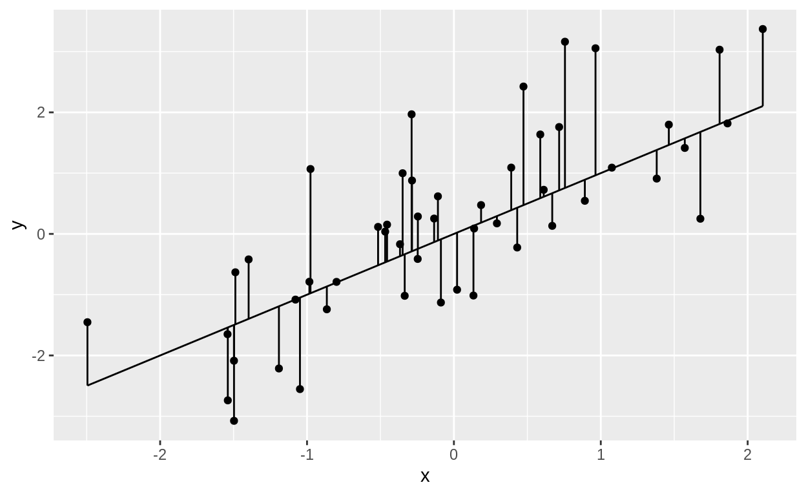
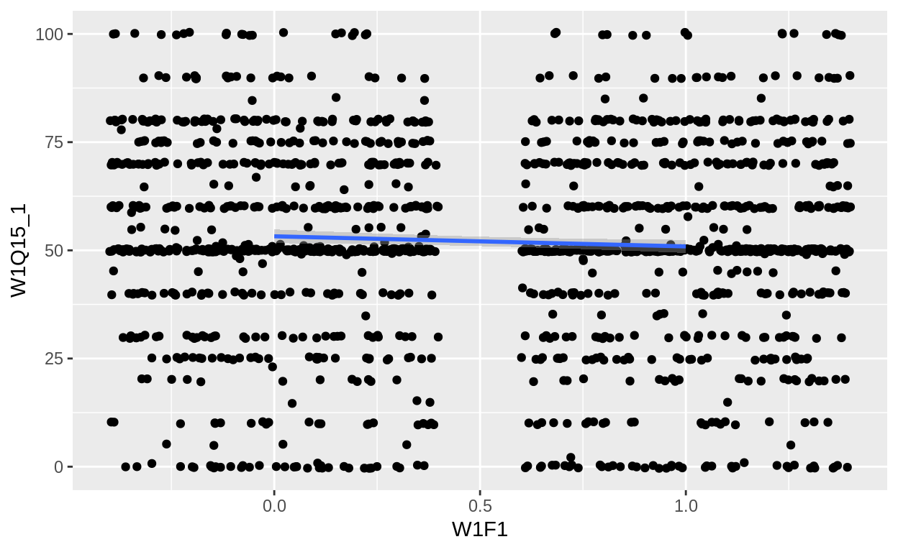
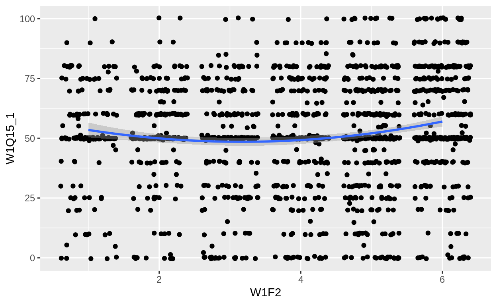
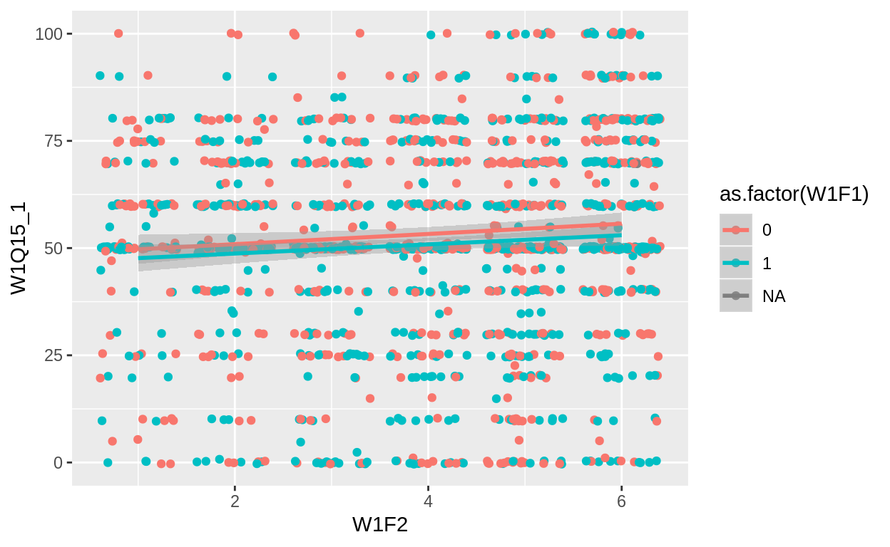
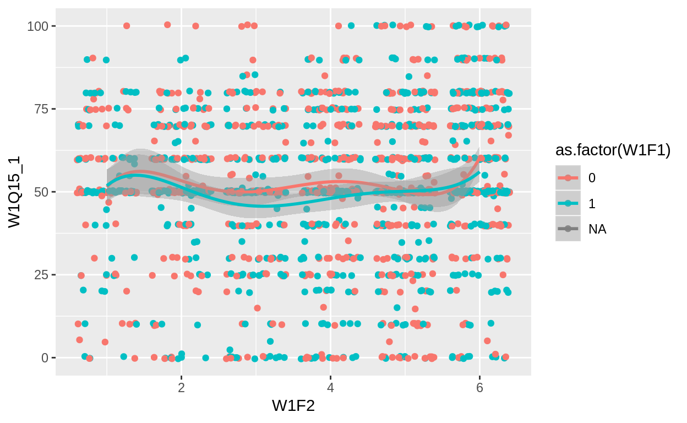

Rで最小二乗法を行う方法を説明します。
データ分析の目的の一つは何かを何かで予測したり、説明したりすることです。 例えば、気温からビールの売上を予測・説明するといった具合です。
いろいろな分野や流派で同じことを違う言葉で表現しますが、予測において予測したい変数を目的変数、予測に使う変数を特徴量と呼びます。 先程の例で言えば気温が特徴量でビールの売上が目的変数です。
統計学や計量経済学では説明したい変数を従属変数、非説明変数などと呼び、説明に使う変数を独立変数、統制変数、説明変数と呼びます。 因果推論を強調する場合は説明したい変数を応答変数、説明に使う変数を処置（変数）、処置以外を共変量と呼んだりもします。
以下では有権者のデータを使ってRで回帰分析をする基本的な方法を説明していきます。 そのため、あえて数学的には厳密でない表現を使っているところもありますが、ご容赦ください。
library(tidyverse)
Registered S3 methods overwritten by 'ggplot2':
method from
[.quosures rlang
c.quosures rlang
print.quosures rlang
── Attaching packages ─────────────────────────────────────────────────────────────── tidyverse 1.2.1 ──
✔ ggplot2 3.1.1 ✔ purrr 0.3.2
✔ tibble 2.1.1 ✔ dplyr 0.8.0.1
✔ tidyr 0.8.3 ✔ stringr 1.4.0
✔ readr 1.3.1 ✔ forcats 0.4.0
── Conflicts ────────────────────────────────────────────────────────────────── tidyverse_conflicts() ──
✖ dplyr::filter() masks stats::filter()
✖ dplyr::lag() masks stats::lag()東大・朝日共同調査の2014年衆院選・2016年参院選世論調査のデータを使います。
data <- read_csv("http://www.masaki.j.u-tokyo.ac.jp/utas/2014_2016UTASV20161004.csv",
locale = locale(encoding = "shift-jis"), na = c("66", "99", "999"))
Parsed with column specification:
cols(
.default = col_character(),
ID = col_double(),
PREFEC = col_double(),
HRDIST = col_double(),
W1Q1 = col_double(),
W1Q2 = col_double(),
W1Q3 = col_double(),
W1Q4 = col_double(),
W1Q5_1 = col_double(),
W1Q5_2 = col_double(),
W1Q5_3 = col_double(),
W1Q6 = col_double(),
W1Q7 = col_double(),
W1Q8 = col_double(),
W1Q9 = col_double(),
W1Q10 = col_double(),
W1Q11 = col_double(),
W1Q12 = col_double(),
W1Q13 = col_double(),
W1Q14_1 = col_double(),
W1Q14_2_1 = col_double()
# ... with 56 more columns
)
See spec(...) for full column specifications.
Warning: 8 parsing failures.
row col expected actual file
1810 PREFEC a double -- 'http://www.masaki.j.u-tokyo.ac.jp/utas/2014_2016UTASV20161004.csv'
1810 HRDIST a double -- 'http://www.masaki.j.u-tokyo.ac.jp/utas/2014_2016UTASV20161004.csv'
1811 PREFEC a double -- 'http://www.masaki.j.u-tokyo.ac.jp/utas/2014_2016UTASV20161004.csv'
1811 HRDIST a double -- 'http://www.masaki.j.u-tokyo.ac.jp/utas/2014_2016UTASV20161004.csv'
1812 PREFEC a double -- 'http://www.masaki.j.u-tokyo.ac.jp/utas/2014_2016UTASV20161004.csv'
.... ...... ........ ...... ...................................................................
See problems(...) for more details.66で、無回答は99なので、これらを欠損値として読み込んでおきます。なお、以下で特に断りのない限り、2014年の衆院選のデータを使います。
最も基本的な回帰分析である最小二乗法についてまずは説明します。
有権者の感情温度を分析したいと思います。 感情温度とは
あなたは、次の①から⑪の政党や政治家に対し、好意的な気持ちを持っていますか、それとも反感を持っていますか。好意も反感も持たないときは、下の「感情温度計」で50度としてください。好意的な気持ちがあれば、その強さに応じて51度から100度、また、反感を感じていれば、49度から0度のどこかの数字で答えてください
という質問の答えです。
ここでは自民党に対する感情温度に関心があるとします。 また、性別によってそれは変化すると考えているとします。
ここで、\(i\)さんの自民党の感情温度を\(y_i\)、性別を\(X_i\)＄とすると、次のような式で表現できる、というのが最小二乗法の前提です。
\[ y_i = \beta_0 + \beta_1 X_i + \varepsilon_i \]
例えば、\(X_i\)は男性のときには0で女性のときには1になるとします。 すると\(i\)が男性のときには\(y_i = \beta_0 + \varepsilon_i\)となり、女性のときには\(y_i = \beta_0 + \beta_1 + \varepsilon_i\)となります。
ひとまず、\(\varepsilon_i\)のことは無視しておくと、\(\beta_0\)は男性のときの自民党への感情温度で、\(\beta_1\)は男性と女性の感情温度の差であるという意味になります。 この\(\beta_0\)や\(\beta_1\)が分かれば、男性と女性の自民党に対する感情温度を予測したり説明することができます。
さて、この\(\varepsilon_i\)は誤差項や撹乱項と呼ばれるもので、\(X_i\)以外の\(y_i\)に影響する全ての要素、です。 例えば年齢や職業、住んでいる場所も自民党への感情温度には影響するかもしれませんが、\(X_i\)には含まれていないので誤差項に含まれていると考えます。
問題はこの誤差項は観察できない要素が含まれている点です。 例えば、調査を受けた時の気分によっても自民党への感情温度の解答は変わるかもしれません。
もし、誤差項がなければ、データ\((y_i,X_i)\)から男性の感情温度\(\beta_0\)と女性の感情温度\(\beta_0+\beta_1\)が分かります。 そして、そこから\(\beta_0\)と\(\beta_1\)観察することはできます。 しかし、誤差項があるので我々は\(\beta_0\)と\(\beta_1\)を観察することができません。
そこで、それらしい\(\beta_0\)と\(\beta_1\)を推定するための方法が最小二乗法になります。
まず、当てずっぽうに\(\hat{\beta}_0\)と\(\hat{\beta}_1\)を決めます。 そして、そこから\(y_i\)の予測値として\(\hat{y}_i = \hat{\beta}_0 + \hat{\beta}_1 X_i\)を求めます。
当然、予測値\(\hat{y}_i\)と観測値\(y_i\)が全ての\(i\)さんについて一致することはありません。 そこで、観測値と予測値の差を\(e_i = y_i - \hat{y}_i\)として求める、残差と名付けます。
この残差が一番小さくなるような\(\hat{\beta}_0\)と\(\hat{\beta}_1\)が\(\beta_0\)と\(\beta_1\)の推定値としていいんじゃないだろうか、というのが最小二乗法の基本的な発想です。 最小二乗法と呼ばれる所以は、残差の二乗\(e_i^2\)の総和を最小にするからです。
（2019年5月23日追記）図にすると次のようになります。 各点が観察を表していて、斜めの直線が予測線になります。 各点から予測線への垂線が残差になります。 このズレが最小になるような予測線の切片と傾きを求める方法が最小二乗法になります。
n <- 50
tibble(x = rnorm(n, 0, 1),
y = x + rnorm(n, 0, 1)) %>%
ggplot() +
geom_point(aes(x = x, y = y)) +
geom_line(aes(x = x, y = x)) +
geom_errorbar(aes(x = x, ymin = x, ymax = y))
まず準備として性別の変数を修正します。 このデータでは男性が1で女性が2なので、1を引いて男性が0、女性が1となるようにします。
data <- data %>%
mutate(W1F1 = W1F1 - 1)最小二乗法を行う際にはlm()を使います。 基本的に
formulaによってy_iとX_iを定義し、dataによって使用するデータを選択します。その結果をmodel1という名前のオブジェクトに保存しておきます。
model1 <- lm(W1Q15_1 ~ W1F1, data = data)結果を保存したオブジェクトをsummary()に入れると分析結果が表示されます。
summary(model1)
Call:
lm(formula = W1Q15_1 ~ W1F1, data = data)
Residuals:
Min 1Q Median 3Q Max
-53.244 -10.905 -0.905 16.756 49.095
Coefficients:
Estimate Std. Error t value Pr(>|t|)
(Intercept) 53.2438 0.8104 65.702 <2e-16 ***
W1F1 -2.3392 1.1226 -2.084 0.0373 *
---
Signif. codes: 0 '***' 0.001 '**' 0.01 '*' 0.05 '.' 0.1 ' ' 1
Residual standard error: 22.5 on 1608 degrees of freedom
(203 observations deleted due to missingness)
Multiple R-squared: 0.002693, Adjusted R-squared: 0.002073
F-statistic: 4.342 on 1 and 1608 DF, p-value: 0.03734(Intercept)のEstimateが\(\hat{\beta}_0\)に、W1F1のEstimateが\(\hat{\beta}_1\)になります。 つまり、女性の方が自民党への感情温度が低いことが分かります。Std. Errorやt vale、Pr(>|t|)などはやや複雑なので割愛しますが、分析結果がたまたまなのかに関する指標です。 今回の場合、女性の方が男性に比べて約2.3度感情温度が低いという結果は偶然だとすれば3%の確率でしか生じないということがわかります。Residualsとは残差のことです。 つまり、予測値と観測値のズレが-53.2から49.1くらいあるということです。 この最小値と最大値は男性なのに0度と答えた人や、逆に女性だけど100度と答えた人になります。R-squaredというものがあります。 これは\(R^2\)と書かれたりもするのですが、\(X_i\)によってどれだけ\(y_i\)を予測できるのかを示しています。 大雑把に言って、性別は自民党への感情温度の0.2%としか予測できていないと言えます。ちなみに、グラフにするとこうなります。
data %>%
ggplot(aes(x = W1F1, y = W1Q15_1)) +
geom_jitter() +
geom_smooth(method = "lm")
Warning: Removed 203 rows containing non-finite values (stat_smooth).
Warning: Removed 203 rows containing missing values (geom_point).
最小二乗法において\(X_i\)の数は一つである必要はありません。 一般的に\(m\)個の特徴量、説明変数を入れることができます。
\[ y_i = \beta_0 + \beta_1 X_{i1} + \cdots \beta_m X_{im} + \varepsilon_iｙ \]
Rで分析する際にはformulaにおいて+で変数を増やします。 試しに、年齢を入れて、次のようなモデルを推定します。
\[ y_i = \beta_0 + \beta_1 \mathit{sex} + \beta_2 \mathit{age} + \varepsilon_i \]
model2 <- lm(W1Q15_1 ~ W1F1 + W1F2, data = data)
summary(model2)
Call:
lm(formula = W1Q15_1 ~ W1F1 + W1F2, data = data)
Residuals:
Min 1Q Median 3Q Max
-55.543 -9.738 0.088 16.710 50.088
Coefficients:
Estimate Std. Error t value Pr(>|t|)
(Intercept) 48.7856 1.5878 30.725 <2e-16 ***
W1F1 -2.4263 1.1217 -2.163 0.0307 *
W1F2 1.1262 0.3444 3.270 0.0011 **
---
Signif. codes: 0 '***' 0.001 '**' 0.01 '*' 0.05 '.' 0.1 ' ' 1
Residual standard error: 22.45 on 1602 degrees of freedom
(208 observations deleted due to missingness)
Multiple R-squared: 0.009424, Adjusted R-squared: 0.008187
F-statistic: 7.621 on 2 and 1602 DF, p-value: 0.0005082WF2のEstimateが正なので年齢が上がると自民党への感情温度が上がることが分かりました。
若者も自民党に好意的ではないかと思うのが人情だと思います。 そういう場合には年齢の二乗項を入れることで分析できます。
\[ y_i = \beta_0 + \beta_1 \mathit{age} + \beta_2 \mathit{age}^2 + \varepsilon_i \]
Rで二乗項や三乗項などを入れる場合はpoly()を使います。
model3 <- lm(W1Q15_1 ~ poly(W1F2, 2, raw = TRUE), data = data)
summary(model3)
Call:
lm(formula = W1Q15_1 ~ poly(W1F2, 2, raw = TRUE), data = data)
Residuals:
Min 1Q Median 3Q Max
-56.994 -8.548 0.747 16.532 51.452
Coefficients:
Estimate Std. Error t value Pr(>|t|)
(Intercept) 59.0939 2.9612 19.956 < 2e-16 ***
poly(W1F2, 2, raw = TRUE)1 -6.6809 1.7675 -3.780 0.000163 ***
poly(W1F2, 2, raw = TRUE)2 1.0551 0.2343 4.503 7.2e-06 ***
---
Signif. codes: 0 '***' 0.001 '**' 0.01 '*' 0.05 '.' 0.1 ' ' 1
Residual standard error: 22.34 on 1603 degrees of freedom
(207 observations deleted due to missingness)
Multiple R-squared: 0.01903, Adjusted R-squared: 0.0178
F-statistic: 15.55 on 2 and 1603 DF, p-value: 2.054e-07年齢の二乗項poly(W1F2, 2)2が正なので下向きに凸ということを意味しています。 ということは両端（若者と老人）で自民党への感情温度が高いと言えます。
data %>%
ggplot(aes(x = W1F2, y = W1Q15_1)) +
geom_jitter() +
geom_smooth(method = "lm", formula = y ~ poly(x,2))
Warning: Removed 207 rows containing non-finite values (stat_smooth).
Warning: Removed 207 rows containing missing values (geom_point).
それでは、年齢による違いは性別によっても違うのではないだろうか、と思うひともいるかと思います。 例えば、女性は年齢にかかわらず自民党への感情温度は低いままかもしれません。
このような場合は性別と年齢をかけ合わせたもの、いわゆる交差項を入れることで分析できます。 数式で表すとこの通りです。
\[ y_i = \beta_0 + \beta_1 \mathit{sex} + \beta_2 \mathit{age} + \beta_3 \mathit{sex} \times \mathit{age} + \varepsilon_i \]
なぜ、この式で男女における年齢の違いが分かるのでしょうか？ 仮に男性の場合、\(\mathit{se}\)は0なので、
\[ y_i = \beta_0 + \beta_2 \mathit{age} + \varepsilon_i \]
となります。 つまり、\(\beta_2\)は男性の場合の年齢と感情温度の関係を意味しています。
一方で、女性の場合は\(\mathit{sex}\)が1になるので、
\[ y_i = \beta_0 + \beta_1 + \beta_2 \mathit{age} + \beta_3 \mathit{age} + \varepsilon_i \]
となります。 もう少しわかりやすく整理すると、
\[ y_i = (\beta_0 + \beta_1) + (\beta_2 + \beta_3) \mathit{age} + \varepsilon_i \]
となります。 つまり、女性の場合の年齢と感情温度の関係は\(\beta_2 + \beta_3\)なのです。
さて、Rで交差項を入れるには*で掛け算をします。
model4 <- lm(W1Q15_1 ~ W1F1*W1F2, data = data)
summary(model4)
Call:
lm(formula = W1Q15_1 ~ W1F1 * W1F2, data = data)
Residuals:
Min 1Q Median 3Q Max
-55.677 -9.796 0.204 16.707 50.284
Coefficients:
Estimate Std. Error t value Pr(>|t|)
(Intercept) 48.5240 2.1567 22.500 <2e-16 ***
W1F1 -1.9334 2.9686 -0.651 0.5150
W1F2 1.1921 0.5040 2.365 0.0181 *
W1F1:W1F2 -0.1238 0.6905 -0.179 0.8577
---
Signif. codes: 0 '***' 0.001 '**' 0.01 '*' 0.05 '.' 0.1 ' ' 1
Residual standard error: 22.45 on 1601 degrees of freedom
(208 observations deleted due to missingness)
Multiple R-squared: 0.009444, Adjusted R-squared: 0.007588
F-statistic: 5.088 on 3 and 1601 DF, p-value: 0.001656交差項を含む分析の結果の解釈には注意が必要です。 まず、W1F2は正なっています。 これは\(\beta_2\)に相当するものなので、男性の場合は年齢が上がると自民党への感情温度が上がることを意味します。
一方、W1F1:W1F2は負です。 これを見ると女性は年齢が上がると自民党への感情温度が下がる、と思いそうです。 しかし、これは\(\beta_3\)に相当するものです。 女性における年齢と感情温度の関係は\(\beta_2 + \beta_3\)なので、引き算をしても依然として正であることがわかります。
data %>%
ggplot(aes(x = W1F2, y = W1Q15_1, colour = as.factor(W1F1))) +
geom_jitter() +
geom_smooth(method = "lm", formula = y ~ x)
Warning: Removed 207 rows containing non-finite values (stat_smooth).
Warning: Removed 207 rows containing missing values (geom_point).
最後に、てんこ盛りにしたモデルを作ってみます。 二次関数とは言わずに五次関数にして、それぞれ性別によって変化するモデルを推定しちゃいましょう。
model5 <- lm(W1Q15_1 ~ W1F1*poly(W1F2, 5, raw = TRUE), data = data)
summary(model5)
Call:
lm(formula = W1Q15_1 ~ W1F1 * poly(W1F2, 5, raw = TRUE), data = data)
Residuals:
Min 1Q Median 3Q Max
-60.239 -10.239 -0.096 14.904 51.986
Coefficients:
Estimate Std. Error t value Pr(>|t|)
(Intercept) -44.8999 63.2956 -0.709 0.4782
W1F1 24.3253 87.3222 0.279 0.7806
poly(W1F2, 5, raw = TRUE)1 203.6362 130.2536 1.563 0.1182
poly(W1F2, 5, raw = TRUE)2 -150.2097 94.1040 -1.596 0.1106
poly(W1F2, 5, raw = TRUE)3 50.2245 30.7719 1.632 0.1028
poly(W1F2, 5, raw = TRUE)4 -7.7822 4.6498 -1.674 0.0944 .
poly(W1F2, 5, raw = TRUE)5 0.4537 0.2636 1.722 0.0853 .
W1F1:poly(W1F2, 5, raw = TRUE)1 -51.8308 179.6514 -0.289 0.7730
W1F1:poly(W1F2, 5, raw = TRUE)2 40.9427 129.7956 0.315 0.7525
W1F1:poly(W1F2, 5, raw = TRUE)3 -15.5561 42.4631 -0.366 0.7142
W1F1:poly(W1F2, 5, raw = TRUE)4 2.7295 6.4215 0.425 0.6709
W1F1:poly(W1F2, 5, raw = TRUE)5 -0.1760 0.3643 -0.483 0.6290
---
Signif. codes: 0 '***' 0.001 '**' 0.01 '*' 0.05 '.' 0.1 ' ' 1
Residual standard error: 22.28 on 1593 degrees of freedom
(208 observations deleted due to missingness)
Multiple R-squared: 0.02933, Adjusted R-squared: 0.02263
F-statistic: 4.376 on 11 and 1593 DF, p-value: 1.716e-06\(R^2\)を見ると0.029で、二次関数だけのモデルmodel3の0.019から少し改善していることがわかります。
data %>%
ggplot(aes(x = W1F2, y = W1Q15_1, colour = as.factor(W1F1))) +
geom_jitter() +
geom_smooth(method = "lm", formula = y ~ poly(x, 5))
Warning: Removed 207 rows containing non-finite values (stat_smooth).
Warning: Removed 207 rows containing missing values (geom_point).
ただし、予測力が高くなっても説明力が高くなるとは限りません。